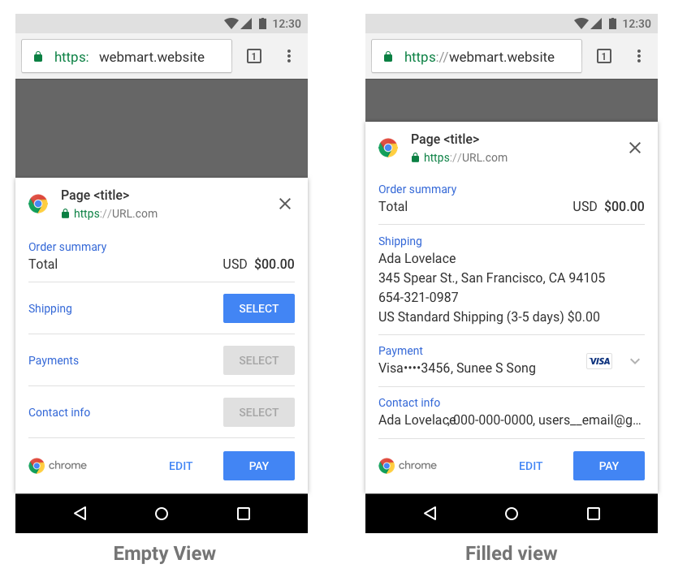

This contains all of the steps you need to take when designing a flow in Sketch App.
The file is made up of multiple symbols that can be overridden. To learn more about the UX of the Payments Request API, checkout the article on Web Fundamentals.  You can download it here
Attribution 4.0 International (CC BY 4.0)
Stickersheet Designer: Mustafa Kurtuldu
Original UI & UX Design: Bruno Bergher